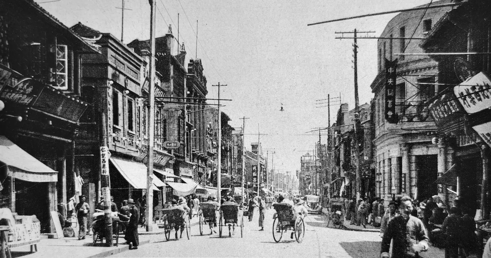

SUZHOU · ONE FRAME · TWO MOMENTS
Stand in the same place, decades later.
Match archival photographs with the streets of Gusu today. Explore from anywhere, or follow the route and make your own then-and-now image.
20 documented viewpoints⌖ optional location○ photos stay on device

↔
ARCHIVETODAY
1930年代 · 选自《苏州通史》2024 · 来源：古城阳面
Guanqian Street · 观前街1930s → 2024 · Drag to reveal the changing street.
THREE WAYS TO BEGIN
Three glimpses into a changing city.
Swipe through three representative stories. Discover the other seventeen viewpoints by exploring the map.
1 / 3
A SMALL ACT OF FIELDWORK
Look closely. Find the frame. Bring it forward.
- 01Choose a story
Preview the transformation remotely before deciding whether to walk there.
- 02Find the viewpoint
Use the map, bilingual place name and visual framing notes to locate the original angle.
- 03完成古今合影打卡
让自己进入画面，与历史照片同框，并下载一张专属姑苏纪念卡。
THE FIELD ROUTE
Explore the surviving clues across Gusu.
Twenty archival viewpoints across the old city.
Archive photo✓Visited